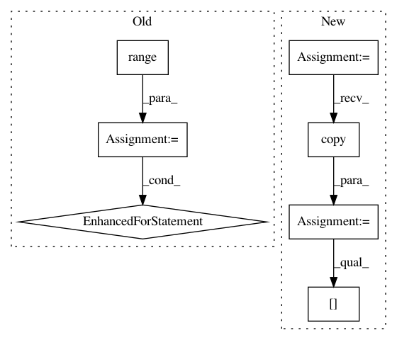

4704e86551c33ebfdf6e2227c350014a8d06c116,paysage/models/model_utils.py,ComputationGraph,set_excluded_layers,#ComputationGraph#Any#,613
Before Change
// set the exclusions
for layer_index in range(self.num_layers):
self.layer_connections[layer_index].excluded = (layer_index in excluded_layers)
// build the connections
self.weight_connections = self.build_weight_connections(excluded=excluded_layers)
self.layer_connections = self.rebuild_layer_connections()
After Change
None
new_incidence_matrix = np.copy(self.connections.incidence_matrix)
for excluded_layer in excluded_layers:
new_incidence_matrix = self._exclude_layer(new_incidence_matrix, excluded_layer)
// set the excluded attributes
self.excluded_layers = excluded_layers
self.excluded_weights = np.where(~new_incidence_matrix.any(axis=0))[0]
// call the update
self.update(new_incidence_matrix)
In pattern: SUPERPATTERN
Frequency: 4
Non-data size: 7
Instances
Project Name: drckf/paysage
Commit Name: 4704e86551c33ebfdf6e2227c350014a8d06c116
Time: 2017-05-17
Author: jrwalsh1@gmail.com
File Name: paysage/models/model_utils.py
Class Name: ComputationGraph
Method Name: set_excluded_layers
Project Name: drckf/paysage
Commit Name: 1fa77c2ca2daa62ecad77dd0d6ba5e1f7b025cd8
Time: 2017-05-17
Author: jrwalsh1@gmail.com
File Name: paysage/models/model_utils.py
Class Name: ComputationGraph
Method Name: set_excluded_layers
Project Name: lmcinnes/umap
Commit Name: 54b9bff99937eb67e91d02044530cc9c5ddee20c
Time: 2018-01-16
Author: leland.mcinnes@gmail.com
File Name: umap/umap_.py
Class Name:
Method Name: optimize_layout
Project Name: lmcinnes/umap
Commit Name: 53cf04e6ac90bb7d8004318a9609a2cca456c819
Time: 2018-01-14
Author: leland.mcinnes@gmail.com
File Name: umap/umap_.py
Class Name:
Method Name: optimize_layout